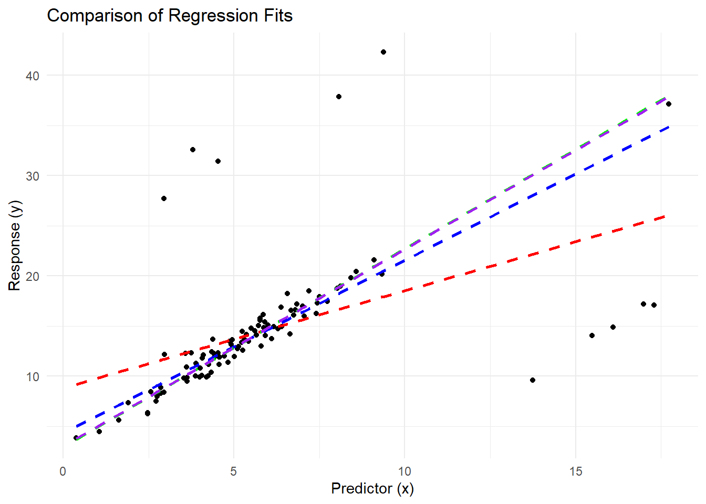

5.5 Robust Estimators
Robust estimators are statistical techniques designed to provide reliable parameter estimates even when the assumptions underlying classical methods, such as Ordinary Least Squares, are violated. Specifically, they address issues caused by outliers, non-normal errors, or heavy-tailed distributions, which can render OLS inefficient or biased.
The goal of robust estimation is to reduce the sensitivity of the estimator to extreme or aberrant data points, thereby ensuring a more reliable and accurate fit to the majority of the data.
We will cover the key robust estimation techniques, their properties, and applications, along with practical examples and mathematical derivations. The focus will include \(M\)-estimators, \(R\)-estimators, \(L\)-estimators, \(LTS\), \(S\)-estimators, \(MM\)-estimators, and more.
5.5.1 Motivation for Robust Estimation
OLS seeks to minimize the Residual Sum of Squares (RSS):
\[ RSS = \sum_{i=1}^n (y_i - x_i'\beta)^2, \]
where:
- \(y_i\) is the observed response for the \(i\)th observation,
- \(x_i\) is the vector of predictors for the \(i\)th observation,
- \(\beta\) is the vector of coefficients.
OLS assumes:
- Errors are normally distributed and no outliers in the data (A6 Normal Distribution).
- Homoscedasticity (constant variance of errors) (A4 Homoskedasticity).
In real-world scenarios:
Outliers in \(y\) or \(x\) can disproportionately affect the estimates, leading to biased or inefficient results.
Heavy-tailed distributions (e.g., Cauchy) violate the normality assumption, making OLS inappropriate.
For example, P. J. Huber (1964) demonstrates that a single extreme observation can arbitrarily distort OLS estimates, while Hampel et al. (2005) define the breakdown point as a measure of robustness. Robust estimators aim to mitigate these problems by limiting the influence of problematic observations.
OLS inherently squares the residuals \(e_i = y_i - x_i'\beta\), amplifying the influence of large residuals. For example, if a single residual is much larger than the others, its squared value can dominate the RSS, distorting the estimated coefficients.
Consider a simple case where \(y_i = \beta_0 + \beta_1 x_i + e_i\), with \(e_i \sim N(0, \sigma^2)\) under the classical assumptions. Now introduce an outlier: a single observation with an unusually large \(e_i\). The squared residual for this point will dominate the RSS and pull the estimated regression line towards it, leading to biased estimates of \(\beta_0\) and \(\beta_1\).
The breakdown point of an estimator is the proportion of contamination (e.g., outliers) that the estimator can tolerate before yielding arbitrarily large or incorrect results. For OLS, the breakdown point is \(1/n\), meaning even one outlier can cause substantial distortion in the estimates.
5.5.2 \(M\)-Estimators
To address the sensitivity of OLS, robust estimators minimize a different objective function:
\[ \sum_{i=1}^n \rho\left(\frac{y_i - x_i'\beta}{\sigma}\right), \]
where:
- \(\rho(\cdot)\) is a robust loss function that grows slower than the quadratic function used in OLS,
- \(\sigma\) is a scale parameter to normalize residuals.
In OLS, the quadratic loss function \(\rho(z) = z^2\) penalizes large residuals disproportionately. Robust estimators replace this with alternative \(\rho\) functions that limit the penalty for large residuals, thus reducing their influence on the parameter estimates.
A robust \(\rho\) function should satisfy the following properties:
- Bounded Influence: Large residuals contribute a finite amount to the objective function.
- Symmetry: \(\rho(z) = \rho(-z)\) ensures that positive and negative residuals are treated equally.
- Differentiability: For computational tractability, \(\rho\) should be smooth and differentiable.
5.5.2.1 Examples of Robust \(\rho\) Functions
- Huber’s Loss Function (P. J. Huber 1964)
Huber’s loss function transitions between quadratic and linear growth:
\[ \rho(z) = \begin{cases} \frac{z^2}{2} & \text{if } |z| \leq c, \\ c|z| - \frac{c^2}{2} & \text{if } |z| > c. \end{cases} \]
Key features:
- For small residuals (\(|z| \leq c\)), the loss is quadratic, mimicking OLS.
- For large residuals (\(|z| > c\)), the loss grows linearly, limiting their influence.
The parameter \(c\) controls the threshold at which the loss function transitions from quadratic to linear. Smaller values of \(c\) make the estimator more robust but potentially less efficient under normality.
- Tukey’s Bisquare Function (Beaton and Tukey 1974)
Tukey’s bisquare function completely bounds the influence of large residuals:
\[ \rho(z) = \begin{cases} c^2 \left(1 - \left(1 - \left(\frac{z}{c}\right)^2\right)^3\right)/6 & \text{if } |z| \leq c, \\ c^2/6 & \text{if } |z| > c. \end{cases} \]
Key features:
- Residuals larger than \(c\) contribute a constant value to the objective function, effectively excluding them from the estimation process.
- This approach achieves high robustness at the cost of lower efficiency for small residuals.
- Andrews’ Sine Function (D. F. Andrews 1974):
- Smoothly downweights extreme residuals: \[ \rho(z) = \begin{cases} c^2 \left(1 - \cos\left(\frac{z}{c}\right)\right)/2 & \text{if } |z| \leq \pi c, \\ c^2/2 & \text{if } |z| > \pi c. \end{cases} \]
5.5.2.2 Weighting Scheme: Influence Functions
A critical concept in robust estimation is the influence function, which describes the sensitivity of the estimator to individual observations. For \(M\)-estimators, the influence function is derived as the derivative of the loss function \(\rho(z)\) with respect to \(z\):
\[ \psi(z) = \frac{d}{dz} \rho(z). \]
This function plays a crucial role in downweighting large residuals. The weight assigned to each residual is proportional to \(\psi(z)/z\), which decreases as \(|z|\) increases for robust estimators.
For Huber’s loss function, the influence function is:
\[ \psi(z) = \begin{cases} z & \text{if } |z| \leq c, \\ c \cdot \text{sign}(z) & \text{if } |z| > c. \end{cases} \]
- For small residuals, \(\psi(z) = z\), matching OLS.
- For large residuals, \(\psi(z)\) is constant, ensuring bounded influence.
A key consideration when selecting a robust estimator is the trade-off between robustness (resistance to outliers) and efficiency (performance under ideal conditions). The tuning parameters in \(\rho\) functions (e.g., \(c\) in Huber’s loss) directly affect this balance:
- Smaller \(c\) increases robustness but reduces efficiency under normality.
- Larger \(c\) improves efficiency under normality but decreases robustness to outliers.
This trade-off reflects the fundamental goal of robust estimation: to achieve a balance between reliability and precision across a wide range of data scenarios.
5.5.2.3 Properties of \(M\)-Estimators
Robust estimators, particularly \(M\)-estimators, possess the following mathematical properties:
- Asymptotic Normality: Under mild regularity conditions, \(M\)-estimators are asymptotically normal: \[ \sqrt{n} (\hat{\beta} - \beta) \xrightarrow{d} N(0, \Sigma), \] where \(\Sigma\) depends on the choice of \(\rho\) and the distribution of residuals.
- Consistency: As \(n \to \infty\), \(\hat{\beta} \to \beta\) in probability, provided the majority of the data satisfies the model assumptions.
- Breakdown Point: \(M\)-estimators typically have a moderate breakdown point, sufficient to handle a reasonable proportion of contamination.
5.5.3 \(R\)-Estimators
\(R\)-estimators are a class of robust estimators that rely on the ranks of residuals rather than their raw magnitudes. This approach makes them naturally resistant to the influence of outliers and highly effective in scenarios involving ordinal data or heavy-tailed error distributions. By leveraging rank-based methods, \(R\)-estimators are particularly useful in situations where classical assumptions about the data, such as normality or homoscedasticity, do not hold.
The general form of an \(R\)-estimator can be expressed as:
\[ \hat{\beta}_R = \arg\min_\beta \sum_{i=1}^n w_i R_i \left(y_i - x_i'\beta\right), \]
where:
- \(R_i\) are the ranks of residuals \(e_i = y_i - x_i'\beta\),
- \(w_i\) are rank-based weights determined by a chosen scoring function,
- \(y_i\) are observed responses, \(x_i\) are predictor values, and \(\beta\) is the vector of coefficients.
This formulation differs from \(M\)-estimators, which directly minimize a loss function \(\rho\), by instead using the ordering of residuals to drive the estimation.
5.5.3.1 Ranks and Scoring Function
5.5.3.1.1 Definition of Ranks
The rank \(R_i\) of a residual \(e_i\) is its position in the sorted sequence of all residuals:
\[ R_i = \text{rank}(e_i) = \sum_{j=1}^n \mathbb{I}(e_j \leq e_i), \]
where \(\mathbb{I}(\cdot)\) is the indicator function, equal to 1 if the condition is true and 0 otherwise. This step transforms the residuals into an ordinal scale, eliminating their dependency on magnitude.
5.5.3.1.2 Scoring Function
The weights \(w_i\) are derived from a scoring function \(S(R_i)\), which assigns importance to each rank. A common choice is the Wilcoxon scoring function, defined as:
\[ S(R_i) = \frac{R_i}{n + 1}, \]
which gives equal weight to all ranks, scaled by their position relative to the total number of observations \(n\).
Other scoring functions can emphasize different parts of the rank distribution:
- Normal Scores: Derived from the quantiles of a standard normal distribution.
- Logarithmic Scores: Weight lower ranks more heavily.
The flexibility of the scoring function allows \(R\)-estimators to adapt to various data structures and assumptions.
5.5.3.2 Properties of \(R\)-Estimators
5.5.3.2.1 Influence Function and Robustness
A key feature of \(R\)-estimators is their bounded influence function, which ensures robustness. Because the estimator depends only on the ranks of the residuals, extreme values in \(y\) or \(x\) do not disproportionately affect the results.
For \(R\)-estimators, the influence function \(\psi(e_i)\) is proportional to the derivative of the rank-based objective function:
\[ \psi(e_i) = S'(R_i), \]
where \(S'(R_i)\) is the derivative of the scoring function. Since \(R_i\) depends only on the ordering of residuals, outliers in the data cannot produce excessive changes in \(R_i\), resulting in bounded influence.
5.5.3.3 Derivation of \(R\)-Estimators for Simple Linear Regression
Consider the simple linear regression model:
\[ y_i = \beta_0 + \beta_1 x_i + e_i, \]
where \(e_i = y_i - (\beta_0 + \beta_1 x_i)\) are the residuals.
Rank the Residuals: Compute the residuals \(e_i\) for all observations and rank them from smallest to largest.
Assign Weights: Compute weights \(w_i\) for each residual rank based on the scoring function \(S(R_i)\).
Minimize the Rank-Based Objective: Solve the following optimization problem:
\[ \hat{\beta}_R = \arg\min_{\beta_0, \beta_1} \sum_{i=1}^n w_i R_i \left( y_i - (\beta_0 + \beta_1 x_i) \right). \]
This minimization can be performed iteratively using numerical methods, as the rank-based nature of the function makes direct analytic solutions challenging.
5.5.3.4 Comparison to \(M\)-Estimators
While \(M\)-estimators downweight large residuals using robust loss functions, \(R\)-estimators completely avoid reliance on the magnitude of residuals by using their ranks. This distinction has important implications:
- \(R\)-estimators are naturally robust to leverage points and extreme outliers.
- The performance of \(R\)-estimators is less sensitive to the choice of scale parameter compared to \(M\)-estimators.
- However, \(R\)-estimators may be less efficient than \(M\)-estimators under normality because they do not use the full information contained in the residual magnitudes.
5.5.4 \(L\)-Estimators
\(L\)-estimators are a class of robust estimators constructed as linear combinations of order statistics, where order statistics are simply the sorted values of a dataset. These estimators are particularly appealing due to their intuitive nature and computational simplicity. By using the relative ranks of observations, \(L\)-estimators offer robustness against outliers and heavy-tailed distributions.
Order statistics are denoted as \(y_{(1)}, y_{(2)}, \dots, y_{(n)}\), where \(y_{(i)}\) is the \(i\)th smallest observation in the sample.
The general form of an \(L\)-estimator is:
\[ \hat{\theta}_L = \sum_{i=1}^n c_i y_{(i)}, \]
where:
- \(y_{(i)}\) are the order statistics (sorted observations),
- \(c_i\) are coefficients (weights) that determine the contribution of each order statistic to the estimator.
By appropriately choosing the weights \(c_i\), different types of \(L\)-estimators can be constructed to suit specific needs, such as handling outliers or capturing central tendencies robustly.
Examples of \(L\)-Estimators
Sample Median: The sample median is a simple \(L\)-estimator where only the middle order statistic contributes (for odd \(n\)) or the average of the two middle order statistics contributes (for even \(n\)):
\[ \hat{\mu}_{\text{median}} = \begin{cases} y_{\left(\frac{n+1}{2}\right)} & \text{if } n \text{ is odd}, \\ \frac{1}{2}\left(y_{\left(\frac{n}{2}\right)} + y_{\left(\frac{n}{2} + 1\right)}\right) & \text{if } n \text{ is even}. \end{cases} \]
- Robustness: The median has a breakdown point of \(50\%\), meaning it remains unaffected unless more than half the data are corrupted.
- Efficiency: Under normality, the efficiency of the median is lower than that of the mean (about \(64\%\)).
Trimmed Mean: The trimmed mean excludes the smallest and largest \(k\%\) of observations before averaging the remaining values:
\[ \hat{\mu}_T = \frac{1}{n - 2k} \sum_{i=k+1}^{n-k} y_{(i)}, \]
where:
\(k\) is the number of observations trimmed from each tail,
\(n\) is the sample size.
Robustness: The trimmed mean is less sensitive to extreme values than the sample mean.
Efficiency: By retaining most observations, the trimmed mean achieves a good balance between robustness and efficiency.
Winsorized Mean: Similar to the trimmed mean, but instead of excluding extreme values, it replaces them with the nearest remaining observations:
\[ \hat{\mu}_W = \frac{1}{n} \sum_{i=1}^n y_{(i)}^*, \]
where \(y_{(i)}^*\) are “Winsorized” values: \[ y_{(i)}^* = \begin{cases} y_{(k+1)} & \text{if } i \leq k, \\ y_{(i)} & \text{if } k+1 \leq i \leq n-k, \\ y_{(n-k)} & \text{if } i > n-k. \end{cases} \]
- Robustness: The Winsorized mean reduces the influence of outliers without discarding data.
- Efficiency: Slightly less efficient than the trimmed mean under normality.
Midrange: The midrange is the average of the smallest and largest observations:
\[ \hat{\mu}_{\text{midrange}} = \frac{y_{(1)} + y_{(n)}}{2}. \]
- Robustness: Poor robustness, as it depends entirely on the extreme observations.
- Simplicity: Highly intuitive and computationally trivial.
5.5.4.1 Properties of \(L\)-Estimators
- Robustness to Outliers: \(L\)-estimators gain robustness by downweighting or excluding extreme observations. For instance:
- The trimmed mean completely removes outliers from the estimation process.
- The Winsorized mean limits the influence of outliers by bounding their values.
- Breakdown Point:
- The breakdown point of an \(L\)-estimator depends on how many extreme observations are excluded or replaced.
- The median has the highest possible breakdown point (\(50\%\)), while the trimmed and Winsorized means have breakdown points proportional to the trimming percentage.
- Efficiency:
- The efficiency of \(L\)-estimators varies depending on the underlying data distribution and the specific estimator.
- For symmetric distributions, the trimmed mean and Winsorized mean approach the efficiency of the sample mean while being much more robust.
- Computational Simplicity:
- \(L\)-estimators involve simple operations like sorting and averaging, making them computationally efficient even for large datasets.
5.5.4.2 Derivation of the Trimmed Mean
To understand the robustness of the trimmed mean, consider a dataset with \(n\) observations. Sorting the data gives \(y_{(1)} \leq y_{(2)} \leq \dots \leq y_{(n)}\). After trimming the smallest \(k\) and largest \(k\) observations, the remaining \(n - 2k\) observations are used to compute the mean:
\[ \hat{\mu}_T = \frac{1}{n - 2k} \sum_{i=k+1}^{n-k} y_{(i)}. \]
Key observations:
- Impact of \(k\): Larger \(k\) increases robustness by removing more extreme values but reduces efficiency by discarding more data.
- Choosing \(k\): In practice, \(k\) is often chosen as a percentage of the total sample size, such as \(10\%\) trimming (\(k = 0.1n\)).
5.5.5 Least Trimmed Squares (LTS)
Least Trimmed Squares (LTS) is a robust regression method that minimizes the sum of the smallest \(h\) squared residuals, rather than using all residuals as in Ordinary Least Squares. This approach ensures that large residuals, often caused by outliers or leverage points, have no influence on the parameter estimation.
The LTS estimator is defined as:
\[ \hat{\beta}_{LTS} = \arg\min_\beta \sum_{i=1}^h r_{[i]}^2, \]
where:
- \(r_{[i]}^2\) are the ordered squared residuals, ranked from smallest to largest,
- \(h\) is the subset size of residuals to include in the minimization, typically chosen as \(h = \lfloor n/2 \rfloor + 1\) (where \(n\) is the sample size).
This trimming process ensures robustness by focusing on the best-fitting \(h\) observations and ignoring the most extreme residuals.
5.5.5.1 Motivation for LTS
In OLS regression, the objective is to minimize the Residual Sum of Squares (RSS):
\[ RSS = \sum_{i=1}^n r_i^2, \]
where \(r_i = y_i - x_i'\beta\) are the residuals. However, this method is highly sensitive to outliers because even one large residual (\(r_i^2\)) can dominate the RSS, distorting the parameter estimates \(\beta\).
LTS addresses this issue by trimming the largest residuals and focusing only on the \(h\) smallest ones, thus preventing extreme values from affecting the fit. This approach provides a more robust estimate of the regression coefficients \(\beta\).
5.5.5.2 Properties of LTS
Objective Function: The LTS objective function is non-differentiable because it involves ordering the squared residuals. Formally, the ordered residuals are denoted as:
\[ r_{[1]}^2 \leq r_{[2]}^2 \leq \dots \leq r_{[n]}^2, \]
and the objective is to minimize:
\[ \sum_{i=1}^h r_{[i]}^2. \]
This requires sorting the squared residuals, making the computation more complex than OLS.
Choice of \(h\): The parameter \(h\) determines the number of residuals included in the minimization. A common choice is:
\[ h = \lfloor n/2 \rfloor + 1, \]
which ensures a high breakdown point (discussed below). Smaller values of \(h\) increase robustness but reduce efficiency, while larger \(h\) values improve efficiency but decrease robustness.
Breakdown Point: LTS has a breakdown point of approximately \(50\%\), the highest possible for a regression estimator. This means that LTS can handle up to \(50\%\) of contaminated data (e.g., outliers) without yielding unreliable estimates.
Robustness: By focusing only on the \(h\) best-fitting observations, LTS naturally excludes outliers from the estimation process, making it highly robust to both vertical outliers (extreme values in \(y\)) and leverage points (extreme values in \(x\)).
5.5.5.3 Algorithm for LTS
Computing the LTS estimator involves the following steps:
Initialization: Select an initial subset of \(h\) observations to compute a preliminary fit for \(\beta\).
Residual Calculation: For each observation, compute the squared residuals:
\[ r_i^2 = \left(y_i - x_i'\beta\right)^2. \]
Trimming: Rank the residuals from smallest to largest and retain only the \(h\) smallest residuals.
Refitting: Use the \(h\) retained observations to recompute the regression coefficients \(\beta\).
Iterative Refinement: Repeat the process (residual calculation, trimming, refitting) until convergence, typically when \(\beta\) stabilizes.
Efficient algorithms, such as the Fast-LTS algorithm, are used in practice to reduce computational complexity.
5.5.6 \(S\)-Estimators
\(S\)-estimators are a class of robust estimators that focus on minimizing a robust measure of the dispersion of residuals. Unlike methods such as \(M\)-estimators, which directly minimize a loss function based on residuals, \(S\)-estimators aim to find the parameter values \(\beta\) that produce residuals with the smallest robust scale. These estimators are particularly useful in handling datasets with outliers, heavy-tailed distributions, or other violations of classical assumptions.
The scale \(\sigma\) is estimated by solving the following minimization problem:
\[ \hat{\sigma}_S = \arg\min_\sigma \frac{1}{n} \sum_{i=1}^n \rho\left(\frac{y_i - x_i'\beta}{\sigma}\right), \]
where:
- \(\rho\) is a robust loss function that controls the influence of residuals,
- \(y_i\) are observed responses, \(x_i\) are predictors, \(\beta\) is the vector of regression coefficients,
- \(\sigma\) represents the robust scale of the residuals.
Once \(\sigma\) is estimated, the \(S\)-estimator of \(\beta\) is obtained by solving:
\[ \hat{\beta}_S = \arg\min_\beta \hat{\sigma}_S. \]
5.5.6.1 Motivation for \(S\)-Estimators
In regression analysis, classical methods such as Ordinary Least Squares rely on minimizing the Residual Sum of Squares (RSS). However, OLS is highly sensitive to outliers because even a single extreme residual can dominate the sum of squared residuals, leading to biased estimates of \(\beta\).
\(S\)-estimators address this limitation by using a robust scale \(\sigma\) to evaluate the dispersion of residuals. By minimizing this scale, \(S\)-estimators effectively downweight the influence of outliers, resulting in parameter estimates that are more resistant to contamination in the data.
5.5.6.2 Key Concepts in \(S\)-Estimators
Robust Scale Function: The key idea of \(S\)-estimators is to minimize a robust measure of scale. The scale \(\sigma\) is computed such that the residuals normalized by \(\sigma\) produce a value close to the expected contribution of well-behaved observations.
Formally, \(\sigma\) satisfies:
\[ \frac{1}{n} \sum_{i=1}^n \rho\left(\frac{y_i - x_i'\beta}{\sigma}\right) = \delta, \]
where \(\delta\) is a constant that depends on the choice of \(\rho\) and ensures consistency under normality. This equation balances the residuals and controls their influence on the scale estimate.
Choice of \(\rho\)-Function: The choice of the robust \(\rho\) function is critical in determining the behavior of \(S\)-estimators. Common \(\rho\) functions include:
Huber’s \(\rho\)-Function: \[ \rho(z) = \begin{cases} z^2/2 & \text{if } |z| \leq c, \\ c|z| - c^2/2 & \text{if } |z| > c. \end{cases} \]
Tukey’s Bisquare: \[ \rho(z) = \begin{cases} c^2 \left(1 - \left(1 - \left(\frac{z}{c}\right)^2\right)^3\right)/6 & \text{if } |z| \leq c, \\ c^2/6 & \text{if } |z| > c. \end{cases} \]
Andrews’ Sine: \[ \rho(z) = \begin{cases} c^2 \left(1 - \cos\left(\frac{z}{c}\right)\right)/2 & \text{if } |z| \leq \pi c, \\ c^2/2 & \text{if } |z| > \pi c. \end{cases} \]
Robust \(\rho\) functions grow more slowly than the quadratic function used in OLS, limiting the impact of large residuals.
5.5.6.3 Properties of \(S\)-Estimators
Breakdown Point: \(S\)-estimators have a breakdown point of up to \(50\%\), meaning they can tolerate up to half the data being contaminated (e.g., outliers) without yielding unreliable estimates.
Efficiency: The efficiency of \(S\)-estimators depends on the choice of \(\rho\). While they are highly robust, their efficiency under ideal conditions (e.g., normality) may be lower than that of OLS. Proper tuning of \(\rho\) can balance robustness and efficiency.
Influence Function: The influence function measures the sensitivity of the estimator to a small perturbation in the data. For \(S\)-estimators, the influence function is bounded, ensuring robustness to outliers.
Consistency: Under mild regularity conditions, \(S\)-estimators are consistent, meaning \(\hat{\beta}_S \to \beta\) as the sample size \(n \to \infty\).
Asymptotic Normality: \(S\)-estimators are asymptotically normal, with:
\[ \sqrt{n}(\hat{\beta}_S - \beta) \xrightarrow{d} N(0, \Sigma), \]
where \(\Sigma\) depends on the choice of \(\rho\) and the distribution of residuals.
5.5.6.4 Algorithm for Computing \(S\)-Estimators
Initial Guess: Compute an initial estimate of \(\beta\) using a robust method (e.g., LTS or an \(M\)-estimator).
Scale Estimation: Compute a robust estimate of scale \(\hat{\sigma}\) by solving:
\[ \frac{1}{n} \sum_{i=1}^n \rho\left(\frac{y_i - x_i'\beta}{\sigma}\right) = \delta. \]
Iterative Refinement:
- Recalculate residuals \(r_i = y_i - x_i'\beta\).
- Update \(\beta\) and \(\sigma\) iteratively until convergence, typically using numerical optimization techniques.
5.5.7 \(MM\)-Estimators
\(MM\)-estimators are a robust regression method that combines the strengths of two powerful techniques: \(S\)-estimators and \(M\)-estimators. They are designed to achieve both a high breakdown point (up to \(50\%\)) and high efficiency under ideal conditions (e.g., normality). This combination makes \(MM\)-estimators one of the most versatile and widely used robust regression methods.
The process of computing \(MM\)-estimators involves three main steps:
- Compute an initial robust estimate of scale using an \(S\)-estimator.
- Use this robust scale to define weights for an \(M\)-estimator.
- Estimate regression coefficients by solving the weighted \(M\)-estimation problem.
This stepwise approach ensures robustness in the initial scale estimation while leveraging the efficiency of \(M\)-estimators for the final parameter estimates.
Step 1: Robust Scale Estimation
The first step is to estimate the robust scale \(\sigma\) using an \(S\)-estimator. This involves solving:
\[ \hat{\sigma}_S = \arg\min_\sigma \frac{1}{n} \sum_{i=1}^n \rho_S\left(\frac{y_i - x_i'\beta}{\sigma}\right), \]
where \(\rho_S\) is a robust loss function chosen to control the influence of extreme residuals. Common choices for \(\rho_S\) include Huber’s or Tukey’s bisquare functions. This scale estimation provides a robust baseline for weighting residuals in the subsequent \(M\)-estimation step.
Step 2: Weight Definition for \(M\)-Estimation
Using the robust scale \(\hat{\sigma}_S\) obtained in Step 1, the weights for the \(M\)-estimator are defined based on a second loss function, \(\rho_M\). The weights downweight residuals proportional to their deviation relative to \(\hat{\sigma}_S\). For each residual \(r_i = y_i - x_i'\beta\), the weight is computed as:
\[ w_i = \psi_M\left(\frac{r_i}{\hat{\sigma}_S}\right) / \frac{r_i}{\hat{\sigma}_S}, \]
where:
- \(\psi_M\) is the derivative of the robust \(\rho_M\) function, known as the influence function.
- \(\rho_M\) is often chosen to provide high efficiency under normality, such as Huber’s or Hampel’s function.
These weights reduce the impact of large residuals while preserving the influence of small, well-behaved residuals.
Step 3: Final \(M\)-Estimation
The final step involves solving the \(M\)-estimation problem using the weights defined in Step 2. The coefficients \(\hat{\beta}_{MM}\) are estimated by minimizing the weighted residuals:
\[ \hat{\beta}_{MM} = \arg\min_\beta \sum_{i=1}^n w_i \rho_M\left(\frac{y_i - x_i'\beta}{\hat{\sigma}_S}\right). \]
This ensures that the final estimates combine the robustness of the initial \(S\)-estimator with the efficiency of the \(M\)-estimator.
5.5.7.1 Properties of \(MM\)-Estimators
- High Breakdown Point:
- The \(S\)-estimator in the first step ensures a breakdown point of up to \(50\%\), meaning the estimator can handle up to half the data being contaminated without producing unreliable results.
- Asymptotic Efficiency:
- The use of an efficient \(\rho_M\) function in the final \(M\)-estimation step ensures that \(MM\)-estimators achieve high asymptotic efficiency under normality, often close to that of OLS.
- Robustness:
- The combination of robust scale estimation and downweighting of large residuals makes \(MM\)-estimators highly robust to outliers and leverage points.
- Influence Function:
- The influence function of \(MM\)-estimators is bounded, ensuring that no single observation can exert disproportionate influence on the parameter estimates.
- Consistency:
- \(MM\)-estimators are consistent, converging to the true parameter values as the sample size increases, provided the majority of the data satisfies the model assumptions.
- Asymptotic Normality:
\(MM\)-estimators are asymptotically normal, with:
\[ \sqrt{n} (\hat{\beta}_{MM} - \beta) \xrightarrow{d} N(0, \Sigma), \]
where \(\Sigma\) depends on the choice of \(\rho_M\) and the distribution of residuals.
5.5.7.2 Choice of \(\rho\)-Functions for \(MM\)-Estimators
The robustness and efficiency of \(MM\)-estimators depend on the choice of \(\rho_S\) (for scale) and \(\rho_M\) (for final estimation). Common choices include:
Huber’s \(\rho\)-Function: Combines quadratic and linear growth to balance robustness and efficiency:
\[ \rho(z) = \begin{cases} \frac{z^2}{2} & \text{if } |z| \leq c, \\ c|z| - \frac{c^2}{2} & \text{if } |z| > c. \end{cases} \]
Tukey’s Bisquare Function: Provides high robustness by completely bounding large residuals:
\[ \rho(z) = \begin{cases} c^2 \left(1 - \left(1 - \left(\frac{z}{c}\right)^2\right)^3\right)/6 & \text{if } |z| \leq c, \\ c^2/6 & \text{if } |z| > c. \end{cases} \]
Hampel’s Three-Part Redescending Function: Further limits the influence of large residuals by assigning a constant penalty beyond a certain threshold.
\[ \rho(z) = \begin{cases} z^2/2 & \text{if } |z| \leq a, \\ a|z| - a^2/2 & \text{if } a < |z| \leq b, \\ \text{constant} & \text{if } |z| > b. \end{cases} \]
5.5.8 Practical Considerations
The following table summarizes the key properties, advantages, and limitations of the robust estimators discussed: +—————–+———————————————————————-+————————-+——————————+————————————————————————–+———————————————–+ | Estimator | Key Features | Breakdown Point | Efficiency (Under Normality) | Applications | Advantages | +=================+======================================================================+=========================+==============================+==========================================================================+===============================================+ | \(M\)-Estimators | Generalization of OLS Robust \(\rho\) reduces large residual influence | Moderate (up to \(0.29\)) | High with proper tuning | Wide applicability in regression with moderate robustness | Balances robustness and efficiency | | | | | | | | | | | | | | Flexible tuning via \(\rho\)-function | +—————–+———————————————————————-+————————-+——————————+————————————————————————–+———————————————–+ | \(R\)-Estimators | Rank-based method | High (depends on ranks) | Moderate | Ordinal data or heavily skewed distributions | Handles both predictor and response outliers | | | | | | | | | | Immune to outliers in \(x\) and \(y\) | | | | Suitable for ordinal or rank-based data | +—————–+———————————————————————-+————————-+——————————+————————————————————————–+———————————————–+ | \(L\)-Estimators | Linear combination of order statistics | High (up to \(50\%\)) | Moderate | Descriptive statistics, robust averages | Simple and intuitive | | | | | | | | | | | | | | Easy to compute, even for large datasets | +—————–+———————————————————————-+————————-+——————————+————————————————————————–+———————————————–+ | LTS | Minimizes smallest \(h\) squared residuals | High (up to \(50\%\)) | Moderate | Data with high contamination, fault detection | High robustness to outliers | | | | | | | | | | | | | | Resistant to leverage points | +—————–+———————————————————————-+————————-+——————————+————————————————————————–+———————————————–+ | \(S\)-Estimators | Minimizes robust scale of residuals | High (up to \(50\%\)) | Low to moderate | Outlier detection, data with heavy-tailed distributions | Focus on robust scale estimation | | | | | | | | | | | | | | Effective at detecting extreme outliers | +—————–+———————————————————————-+————————-+——————————+————————————————————————–+———————————————–+ | \(MM\)-Estimators | High robustness (scale) + high efficiency (coefficients) | High (up to \(50\%\)) | High | Real-world applications with mixed contamination and heavy-tailed errors | Combinesrobustness and efficiency effectively | | | | | | | | | | | | | | Versatile and flexible | +—————–+———————————————————————-+————————-+——————————+————————————————————————–+———————————————–+
Notes on Choosing an Estimator
- \(M\)-Estimators: Best suited for general-purpose robust regression, offering a balance between robustness and efficiency with moderate contamination.
- \(R\)-Estimators: Ideal for rank-based data or ordinal data, especially when outliers are present in both predictors and responses.
- \(L\)-Estimators: Simple and effective for descriptive statistics or data cleaning with limited computational resources.
- LTS: Recommended for datasets with significant contamination or leverage points due to its high breakdown point.
- \(S\)-Estimators: Focus on robust scale estimation, suitable for identifying and mitigating the influence of extreme residuals.
- \(MM\)-Estimators: Combines the robustness of \(S\)-estimators with the efficiency of \(M\)-estimators, making it the most versatile choice for heavily contaminated data.
# Load necessary libraries
library(MASS) # For robust regression functions like rlm
library(robustbase) # For LTS regression and MM-estimators
library(dplyr) # For data manipulation
library(ggplot2) # For visualization
# Simulate dataset
set.seed(123)
n <- 100
x <- rnorm(n, mean = 5, sd = 2) # Predictor
y <- 3 + 2 * x + rnorm(n, sd = 1) # Response
# Introduce outliers
y[95:100] <- y[95:100] + 20 # Vertical outliers
x[90:95] <- x[90:95] + 10 # Leverage points
data <- data.frame(x, y)
# Visualize the data
ggplot(data, aes(x, y)) +
geom_point() +
labs(title = "Scatterplot of Simulated Data with Outliers",
x = "Predictor (x)",
y = "Response (y)") +
theme_minimal()
# Ordinary Least Squares
ols_model <- lm(y ~ x, data = data)
summary(ols_model)
#>
#> Call:
#> lm(formula = y ~ x, data = data)
#>
#> Residuals:
#> Min 1Q Median 3Q Max
#> -12.6023 -2.4590 -0.5717 0.9247 24.4024
#>
#> Coefficients:
#> Estimate Std. Error t value Pr(>|t|)
#> (Intercept) 8.8346 1.1550 7.649 1.41e-11 ***
#> x 0.9721 0.1749 5.558 2.36e-07 ***
#> ---
#> Signif. codes: 0 '***' 0.001 '**' 0.01 '*' 0.05 '.' 0.1 ' ' 1
#>
#> Residual standard error: 5.583 on 98 degrees of freedom
#> Multiple R-squared: 0.2396, Adjusted R-squared: 0.2319
#> F-statistic: 30.89 on 1 and 98 DF, p-value: 2.358e-07OLS coefficients are highly influenced by the presence of outliers. For example, the slope (x coefficient) and intercept are shifted to fit the outliers, resulting in a poor fit to the majority of the data.
# $M$-Estimators
m_model <- rlm(y ~ x, data = data, psi = psi.huber)
summary(m_model)
#>
#> Call: rlm(formula = y ~ x, data = data, psi = psi.huber)
#> Residuals:
#> Min 1Q Median 3Q Max
#> -18.43919 -0.97575 -0.03297 0.76967 21.85546
#>
#> Coefficients:
#> Value Std. Error t value
#> (Intercept) 4.3229 0.2764 15.6421
#> x 1.7250 0.0419 41.2186
#>
#> Residual standard error: 1.349 on 98 degrees of freedomThe \(M\)-estimator reduces the influence of large residuals using Huber’s psi function. This results in coefficients that are less affected by outliers compared to OLS.
# Least Trimmed Squares (LTS)
lts_model <- ltsReg(y ~ x, data = data)
lts_coefficients <- coef(lts_model)LTS minimizes the smallest squared residuals, ignoring extreme residuals. This results in a more robust fit, particularly in the presence of both vertical outliers and leverage points.
# $MM$-Estimators
mm_model <- lmrob(y ~ x, data = data, setting = "KS2014")
summary(mm_model)
#>
#> Call:
#> lmrob(formula = y ~ x, data = data, setting = "KS2014")
#> \--> method = "SMDM"
#> Residuals:
#> Min 1Q Median 3Q Max
#> -20.45989 -0.69436 -0.01455 0.73614 22.10173
#>
#> Coefficients:
#> Estimate Std. Error t value Pr(>|t|)
#> (Intercept) 3.02192 0.25850 11.69 <2e-16 ***
#> x 1.96672 0.04538 43.34 <2e-16 ***
#> ---
#> Signif. codes: 0 '***' 0.001 '**' 0.01 '*' 0.05 '.' 0.1 ' ' 1
#>
#> Robust residual standard error: 0.9458
#> Multiple R-squared: 0.9562, Adjusted R-squared: 0.9558
#> Convergence in 7 IRWLS iterations
#>
#> Robustness weights:
#> 10 observations c(90,91,92,93,94,96,97,98,99,100)
#> are outliers with |weight| = 0 ( < 0.001);
#> 67 weights are ~= 1. The remaining 23 ones are summarized as
#> Min. 1st Qu. Median Mean 3rd Qu. Max.
#> 0.2496 0.7969 0.9216 0.8428 0.9548 0.9943
#> Algorithmic parameters:
#> tuning.chi1 tuning.chi2 tuning.chi3 tuning.chi4
#> -5.000e-01 1.500e+00 NA 5.000e-01
#> bb tuning.psi1 tuning.psi2 tuning.psi3
#> 5.000e-01 -5.000e-01 1.500e+00 9.500e-01
#> tuning.psi4 refine.tol rel.tol scale.tol
#> NA 1.000e-07 1.000e-07 1.000e-10
#> solve.tol zero.tol eps.outlier eps.x
#> 1.000e-07 1.000e-10 1.000e-03 3.223e-11
#> warn.limit.reject warn.limit.meanrw
#> 5.000e-01 5.000e-01
#> nResample max.it best.r.s k.fast.s k.max
#> 1000 500 20 2 2000
#> maxit.scale trace.lev mts compute.rd numpoints
#> 200 0 1000 0 10
#> fast.s.large.n
#> 2000
#> setting psi subsampling
#> "KS2014" "lqq" "nonsingular"
#> cov compute.outlier.stats
#> ".vcov.w" "SMDM"
#> seed : int(0)\(MM\)-estimators combine robust scale estimation (from \(S\)-estimators) with efficient coefficient estimation (from \(M\)-estimators). This achieves both high robustness and high efficiency under normal conditions.
# Visualizing results
data <- data %>%
mutate(
ols_fit = predict(ols_model, newdata = data),
m_fit = predict(m_model, newdata = data),
lts_fit = fitted(lts_model),
# Use `fitted()` for ltsReg objects
mm_fit = predict(mm_model, newdata = data)
)
ggplot(data, aes(x, y)) +
geom_point() +
geom_line(
aes(y = ols_fit),
color = "red",
linetype = "dashed",
size = 1,
label = "OLS"
) +
geom_line(
aes(y = m_fit),
color = "blue",
linetype = "dashed",
size = 1,
label = "$M$-Estimator"
) +
geom_line(
aes(y = lts_fit),
color = "green",
linetype = "dashed",
size = 1,
label = "LTS"
) +
geom_line(
aes(y = mm_fit),
color = "purple",
linetype = "dashed",
size = 1,
label = "$MM$-Estimator"
) +
labs(title = "Comparison of Regression Fits",
x = "Predictor (x)",
y = "Response (y)") +
theme_minimal()
Visualization shows the differences in regression fits: - OLS is heavily influenced by outliers and provides a poor fit to the majority of the data. ) - The \(M\)-estimator downweights large residuals, resulting in a better fit. - LTS regression ignores the extreme residuals entirely, providing the most robust fit. - \(MM\)-estimators balance robustness and efficiency, producing coefficients close to the LTS but with improved efficiency under normality.
# Comparing Coefficients
comparison <- data.frame(
Method = c("OLS", "$M$-Estimator", "LTS", "$MM$-Estimator"),
Intercept = c(
coef(ols_model)[1],
coef(m_model)[1],
lts_coefficients[1],
coef(mm_model)[1]
),
Slope = c(
coef(ols_model)[2],
coef(m_model)[2],
lts_coefficients[2],
coef(mm_model)[2]
)
)
print(comparison)
#> Method Intercept Slope
#> 1 OLS 8.834553 0.9720994
#> 2 $M$-Estimator 4.322869 1.7250441
#> 3 LTS 2.954960 1.9777635
#> 4 $MM$-Estimator 3.021923 1.9667208The table above shows how the coefficients vary across methods: - OLS coefficients are the most distorted by outliers. - \(M\)-estimators and \(MM\)-estimators provide coefficients that are less influenced by extreme values. - LTS regression, with its trimming mechanism, produces the most robust coefficients by excluding the largest residuals.